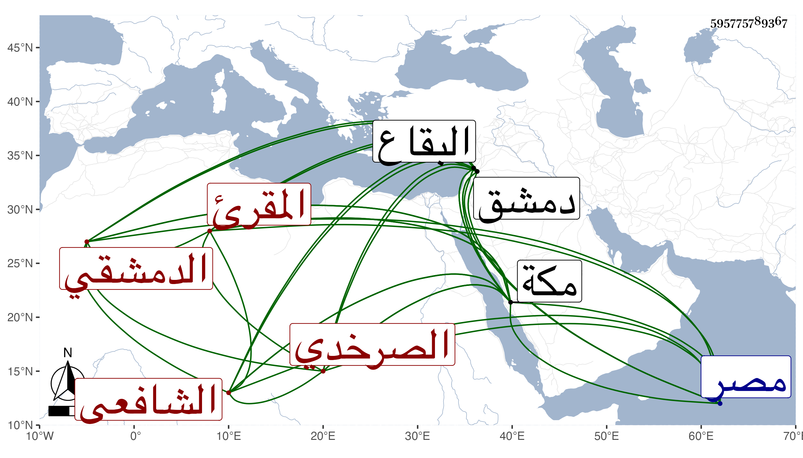

0902Sakhawi.DawLamic.ITO20230111-ara1.EIS1600.595775789367
Biography ID: 595775789367
437
محمد بن محمد بن عمر بن أبي بكر الشمس الصرخدي الأصل الدمشقي الشافعي المقرئ ويعرف بالصرخدي . ولد في سنة أربعين وثمانمائة تقريبا بدمشق ونشأ بها فحفظ القرآن والتنبيه عند أحمد الزينوني بنونين وزاي مفتوحة نسبة لقريبة من قرى البقاع وجود القرآن مع قراءة عاصم علي إسماعيل الحنبلي الدمشقي نزيل صالحيتها وتلا به للكسائي وعاصم علي الشمس بن النجار ولأبي عمرو فقط على الزين خطاب وعليه قرأ البخاري والمصابيح بتمامهما وحضر دروسه ودروس النجم بن قاضي عجلون وجمعا للسبع علي عمر الطيبي الصالحي الضرير وخليل اللدي إمام الجامع الأموي وكانا شافعيين وقرأ على إبراهيم الناجي صحيح مسلم إلا يسيرا من أوله وسمع عليه البخاري والترغيب وغيرهما وحضر مجالس النظام بن مفلح بل قرأ على قريبه البرهان القاضي شيئا من القرآن في آخرين ، وحج غير مرة وجاور بمكة وقرأ بها على الشمس المسيري في الفقه وغيره وابن أمير حاج الحلبي الحنفي رسالة الزين الخافي وسمع على النجم عمر بن فهد في مسند أحمد وعلى أبي الفضل المرجاني في البخاري وصحب العلاء بن السيد عفيف الدين والبرهان إبراهيم القادري وغيرهما من السادات ودخل مصر في التجارة وتكرر سفره لجدة بسببها بل له حانوت في بلده ، ولما كنت بمكة في سنة ثلاث وتسعين رأيته يقوم بالناس التراويح في رمضان فكان من أكثر القائمين زحاما لجودة قراءته ، ثم تكرر اجتماعه علي في التي تليها بل أخذ عني الكثير من الكتب الستة وغيرها سماعا علي ومني وكتبت له إجازة في كراسة وكذا حضر عند عبد المعطي المغربي في الرسالة والعوارف ، ونعم الرجل سمتا وعقلا وتوددا وخيرا .
